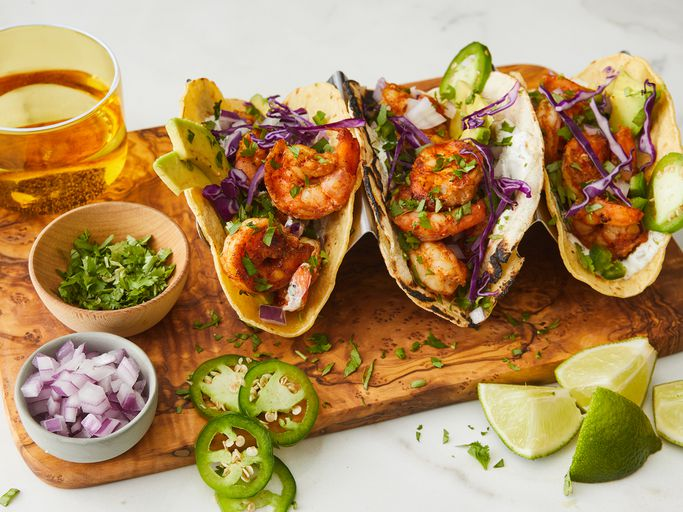

Shrimp Taco Recipe

Description
This sensational shrimp taco recipe with spicy seasoned shrimp, zesty lime crema, avocado, and cilantro is easy
to make and so delicious. Everyone enjoys these tacos when I make them.
Ingredients
- 2 pounds large frozen peeled and deveined shrimp, thawed
- 1 ½ teaspoons chili powder
- 1 teaspoon freshly minced garlic
- ½ teaspoon paprika
- ½ teaspoon ground cumin
- ½ teaspoon onion powder
- ½ teaspoon salt
- ½ teaspoon ground black pepper
- ¼ teaspoon ground coriander
- ¼ teaspoon grated Valencia orange zest
- 2 tablespoons olive oil, or more as needed
- 2 tablespoons sour cream
- 1 lime, zested and juiced
- 1 teaspoon chopped fresh cilantro
- ¼ teaspoon garlic powder
- 1 pinch salt and ground black pepper
- 20 (6 inch) corn tortillas
- 2 avocados, thinly sliced, or to taste
- 1 red onion, finely diced, or to taste
- ½ bunch fresh cilantro, chopped, or to taste
- 1 jalapeño pepper, diced, or to taste (Optional)
- 2 limes, cut into wedges, or as needed
Steps
- Rinse defrosted shrimp under cold water, drain, and pat dry.
- Combine shrimp, chili powder, garlic, paprika, cumin, onion powder, 1/2 teaspoon salt, 1/2 teaspoon black
pepper, coriander, and orange zest in a bowl. Mix well.
- Heat olive oil in nonstick frying pan over medium-high heat. Add shrimp and cook until bright pink on the
outside and the meat is opaque, 4 to 5 minutes on each side, depending on the size of the shrimp.
- While shrimp cooks, prepare crema by whisking together sour cream, zest and juice of 1 lime, 1 teaspoon
cilantro, garlic powder, and 1 pinch each of salt and black pepper.
- Heat corn tortillas in either a pan or on a griddle over low heat, 1 to 2 minutes per side. Be careful not
to let them burn. Set aside.
- Assemble tacos by spreading 1 teaspoon crema across each tortilla, adding 3 or 4 shrimp, 2 slices of
avocado, a sprinkle of fresh red onion, cilantro, and jalapeño. Serve with sliced limes to squeeze on top
and extra crema on the side.